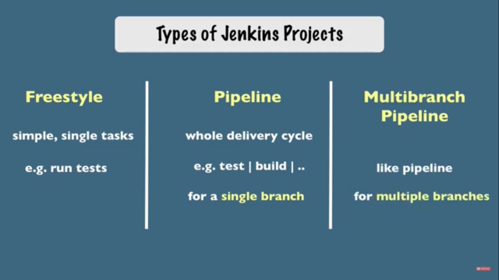
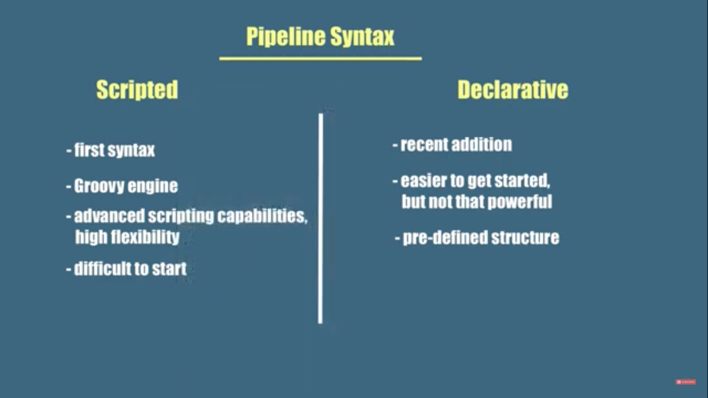

What you'll learn?
Setup a Jenkins server to run the cicd pipelines
Why is this important?
Important part of MLOps
How it will work?
- Go to Play-with-docker site
- Pull the Jenkins docker
- Run the container
- Access Jenkins GUI and install plugins
- Create a pipeline
- Trigger the pipeline by pushing to git
Who is this for?
- People who are new to MLOps
- People willing to improve CICD skills
We will use Play with docker for this tutorial.
Sign-in
Go to this link and login. The landing page will look like this:

Create an instance
Click on ADD NEW INSTANCE. After clicking, it will look like this:

docker run -p 8080:8080 -p 50000:50000 -d -v jenkins_home:/var/jenkins_home jenkins/jenkins:lts

Run docker logs and get the password

Go to localhost:8080 and paste the copied password
Select Install suggested plugins option

Note down the Jenkin URL: http://ip172-18-0-30-c1d37qhbqvp000f2mu60-8080.direct.labs.play-with-docker.com/

Create a new job, name it and select multi-branch as type. Repo might be https://gitlab.com/nanuchi/techworld-js-docker-demo-app/-/tree/jenkins-multi-input


pipeline {
agent none
stages {
stage('Select micro services') {
input {
message "Select all micro services to deploy"
ok "All selected!"
parameters {
choice(name: 'MS1', choices: ['1.1.0', '1.2.0', '1.3.0'], description: 'input ms')
choice(name: 'MS2', choices: ['1.1.0', '1.2.0', '1.3.0'], description: 'input ms')
choice(name: 'MS3', choices: ['1.1.0', '1.2.0', '1.3.0'], description: 'input ms')
choice(name: 'MS4', choices: ['1.1.0', '1.2.0', '1.3.0'], description: 'input ms')
}
}
steps {
script {
echo "Hello, ${MS1}. Hello, ${MS2}. Hello, ${MS3}. Hello, ${MS4}"
MS1_TO_DEPLOY = MS1
MS2_TO_DEPLOY = MS2
env.MS3_TO_DEPLOY = MS3
env.MS4_TO_DEPLOY = MS4
}
}
}
stage('Select single service') {
input {
message "Select single micro services to deploy?"
parameters {
choice(name: 'MS5', choices: ['1.1.0', '1.2.0', '1.3.0'], description: 'second param with single option')
}
}
steps {
script {
echo "Hello, ${MS5}."
env.MS5_TO_DEPLOY = MS5
echo "${MS1_TO_DEPLOY}"
echo "${MS4_TO_DEPLOY}"
echo "${MS5_TO_DEPLOY}"
}
}
}
}
}
Pipeline can be triggered either by 1) Push notifications, or 2) Polling.

Congratulations!
What we've covered
How to setup a Jenkins server to automatically run the CICD pipelines
Links & references
- Jenkins Pipeline Tutorial for Beginners 1⁄4
- Jenkins Pipeline Tutorial for Beginners 2⁄4
- Jenkins Pipeline Tutorial for Beginners 3⁄4
- Jenkins Pipeline Tutorial for Beginners 4⁄4
- Complete Jenkins Pipeline Tutorial | Jenkinsfile explained